3 Jahre Berufserfahrung
Spezialist Content und Multimedia Production bei Migros Logistics.
RAMON KÜNZLE · MEDIA ENGINEER
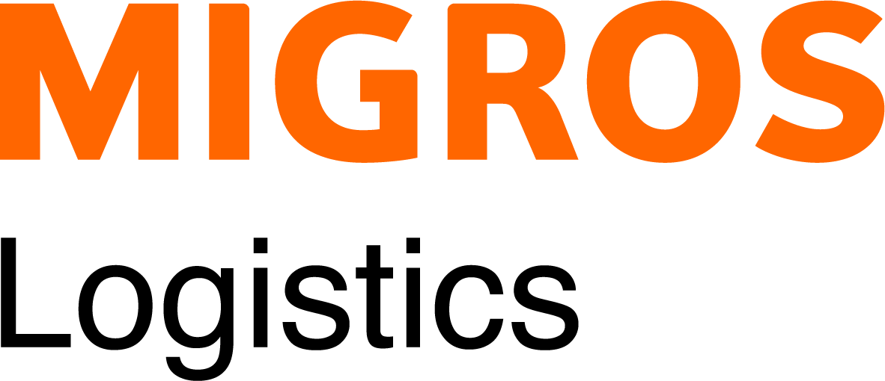
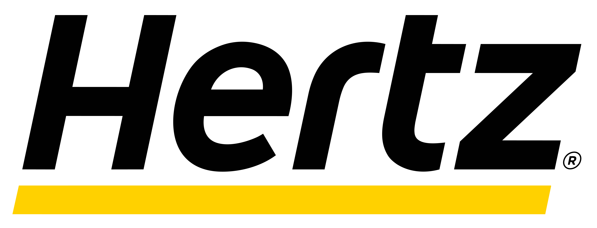
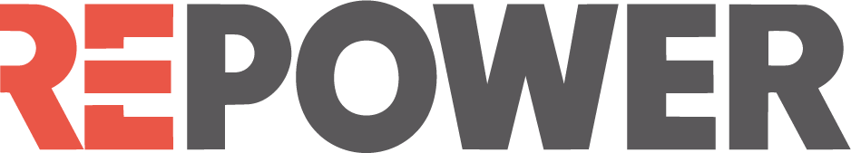
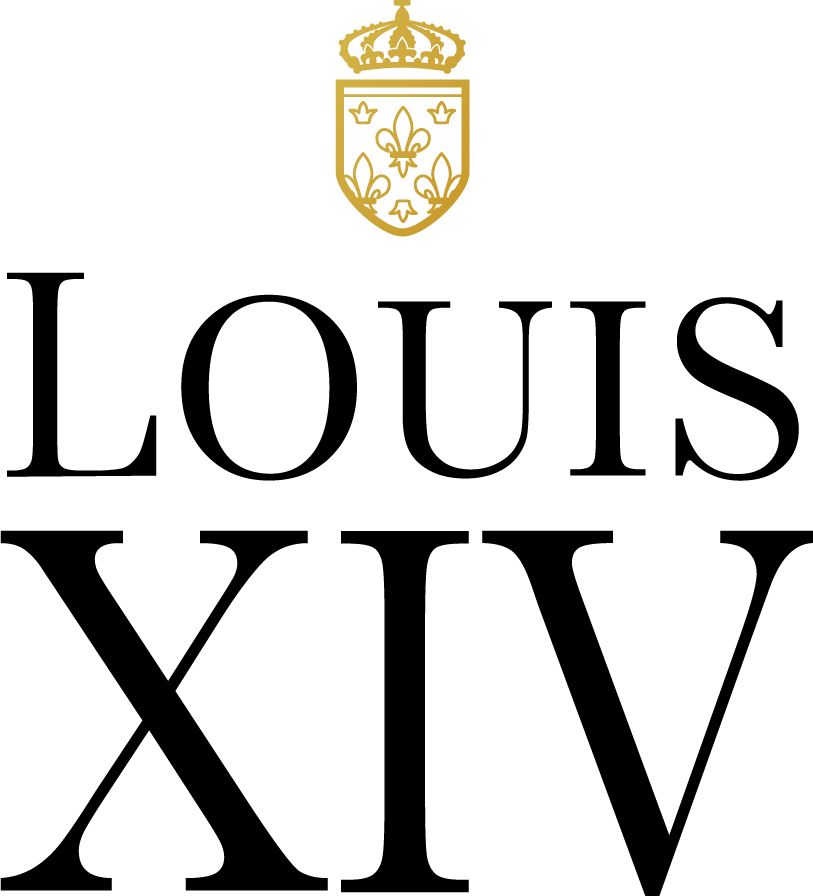
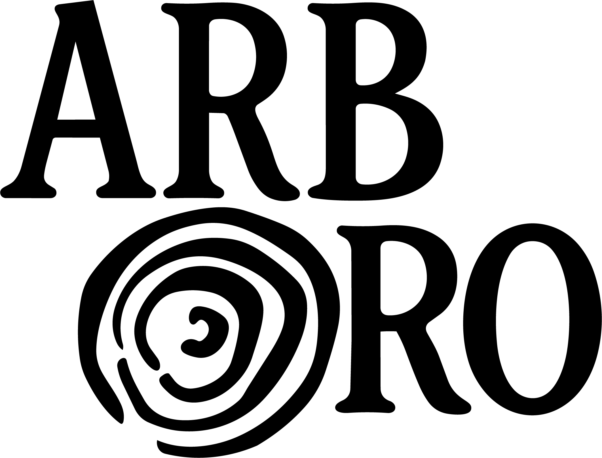
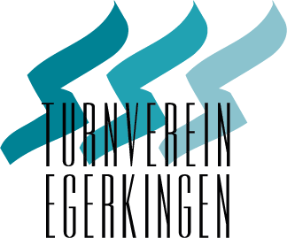
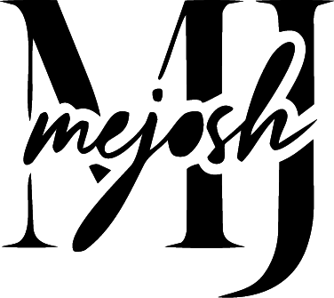
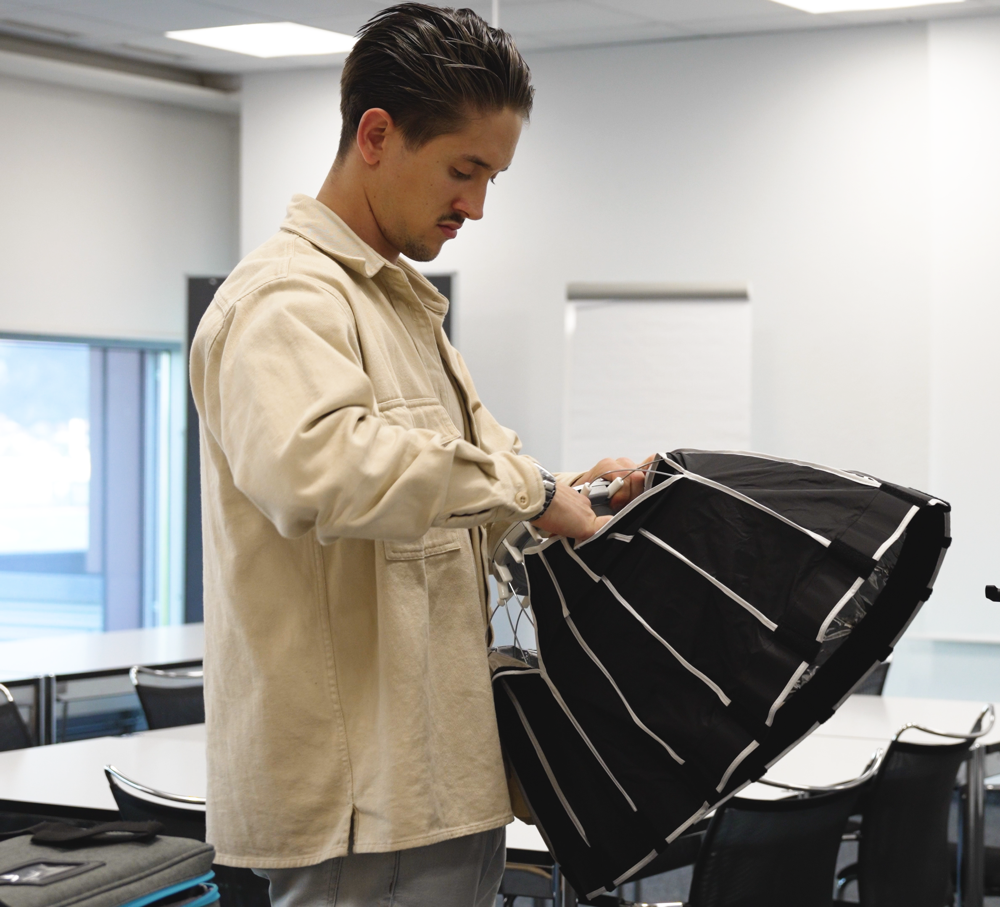
01 / ÜBER MICH
Ich bin Media Engineer mit einer Leidenschaft für visuelles Storytelling und wirkungsvolle Kommunikation.
Ob hinter der Kamera, in der Postproduktion oder bei der Entwicklung kreativer Konzepte – ich verbinde gestalterisches Gespür mit strategischem Denken. Mein Ziel ist es, Inhalte zu schaffen, die nicht nur gut aussehen, sondern Menschen erreichen und Botschaften nachhaltig vermitteln.
Durch meine berufliche Erfahrung, mein Studium und verschiedene eigene Projekte durfte ich unterschiedlichste Facetten der Media Produktion kennenlernen. Diese Vielseitigkeit prägt meine Arbeit und ermöglicht es mir, kreative Ideen ganzheitlich zu denken und effizient umzusetzen.
02 / ERFAHRUNG
Spezialist Content und Multimedia Production bei Migros Logistics.
Bachelor of Science FHGR & BFH in Media Engineering mit Vertiefung in Communication Management.
Zahlreiche umgesetzte Projekte als Freelancer, im Berufsalltag und im Rahmen des Studiums.
03 / LEISTUNGEN
04 / MEINE SKILLS
Die Tools, mit denen ich kreativ arbeite, Inhalte produziere und Kommunikation gezielt und wirkungsvoll umsetze.
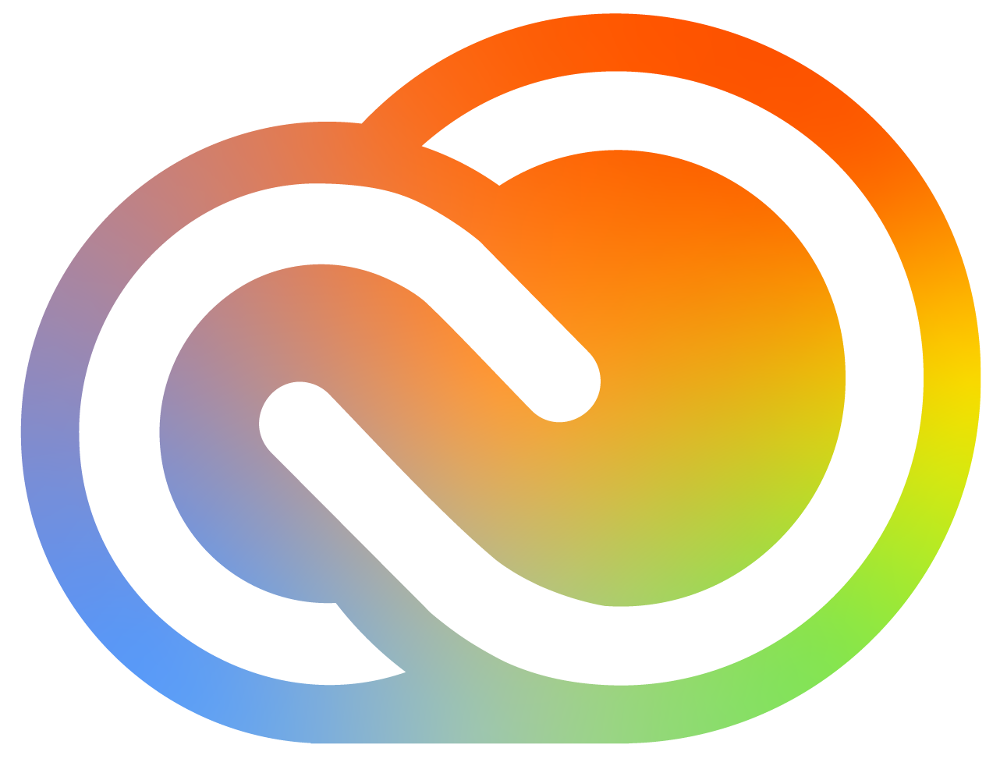
Photoshop
Premiere Pro
InDesign
Illustrator
Audition
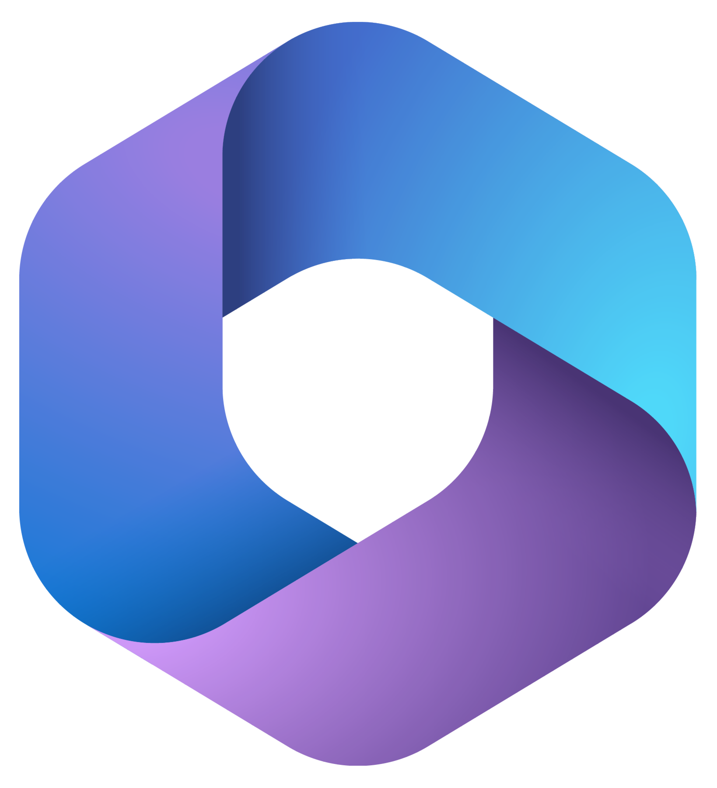
Teams
Word
Excel
PowerPoint
Outlook
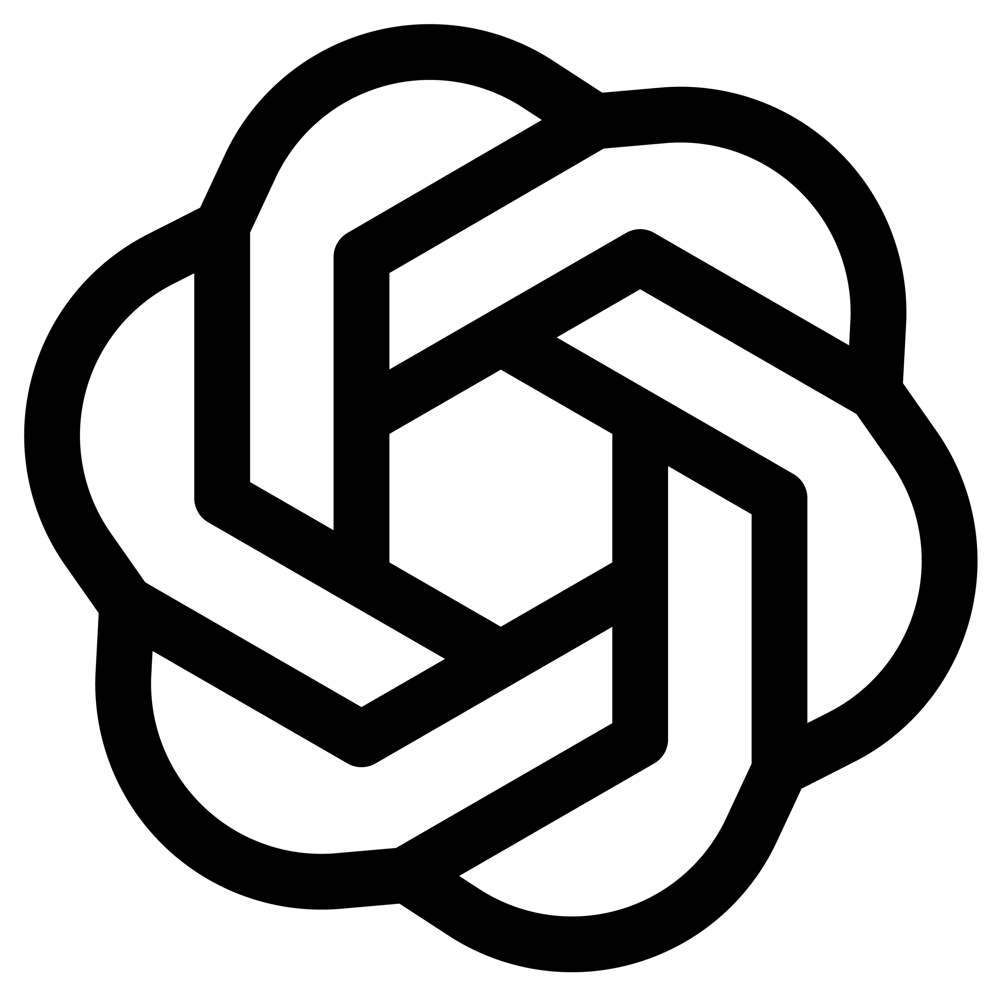
ChatGPT
Claude
Runway
ElevenLabs
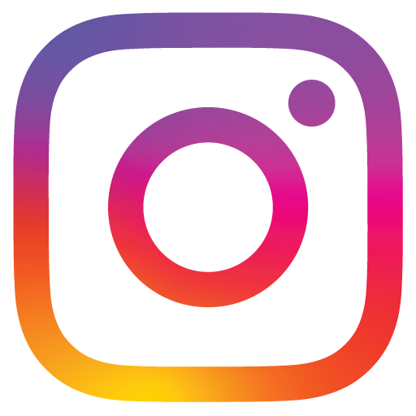
Instagram
LinkedIn
TikTok
YouTube
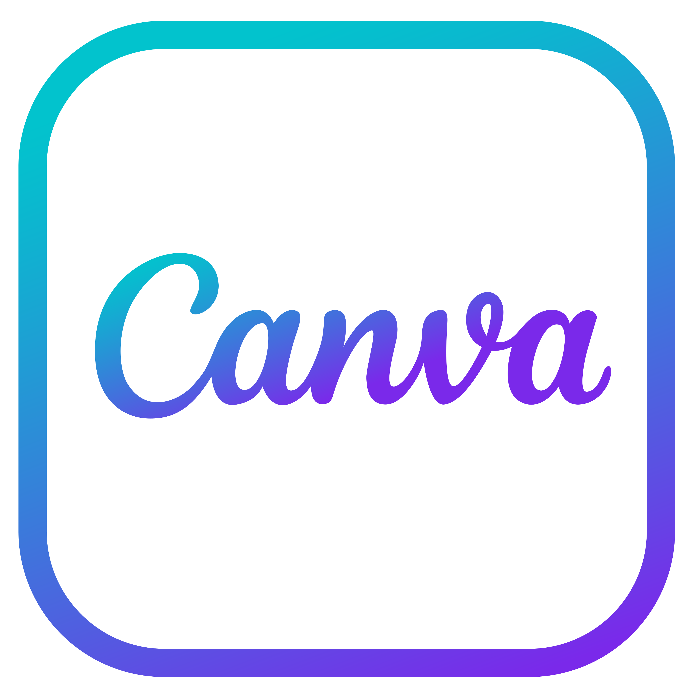
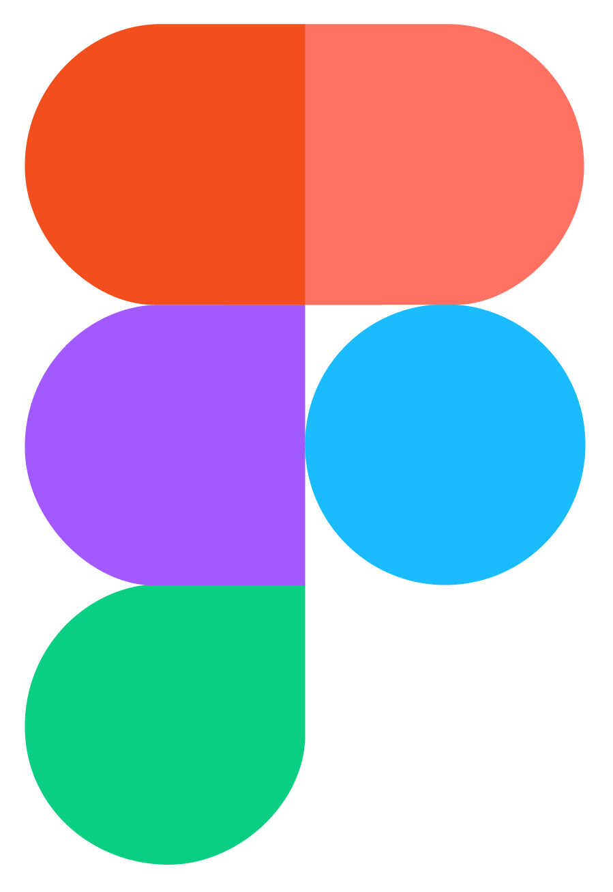
Figma
GitHub
Visual Studio Code
05 / KONTAKT
Ich freue mich auf unsere Zusammenarbeit.